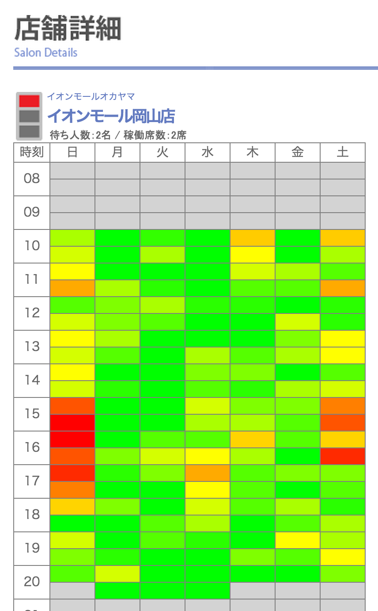

これは何？
QBハウスで混雑する時間帯を知るためのブックマークレットです。
QBハウスの店舗ページで実行すると、以下のような混雑度グラフが表示されます。
QBハウス公式サイトでは現時点の混雑度しかわかりませんが、これを見れば普段から空いている時間帯を狙ってお店に行くことができます。
インストール方法
以下のブックマークレットをブラウザのブックマークバーにドラッグアンドドロップして登録してください。
QB MeteriPhone/Androidなどのスマホでは、ブックマークに以下のURLを登録してください。
使い方
QBハウス公式サイトで混雑度を知りたい店舗のページを開いた状態で、先ほど登録したブックマークレットをクリックすると、上のような混雑度グラフが表示されます。
モバイルのChromeをお使いの場合は、アドレスバーに登録したブックマークレットの名前を入力すると候補として表示され、それをタップすると実行できます。
FAQ
Q. このサイトはQBハウスと関係ありますか？
A. いいえ、QBハウスとは無関係の個人が作成したサイトです。QBハウス公式サイトでこのような機能が提供されることを願って作成しました。